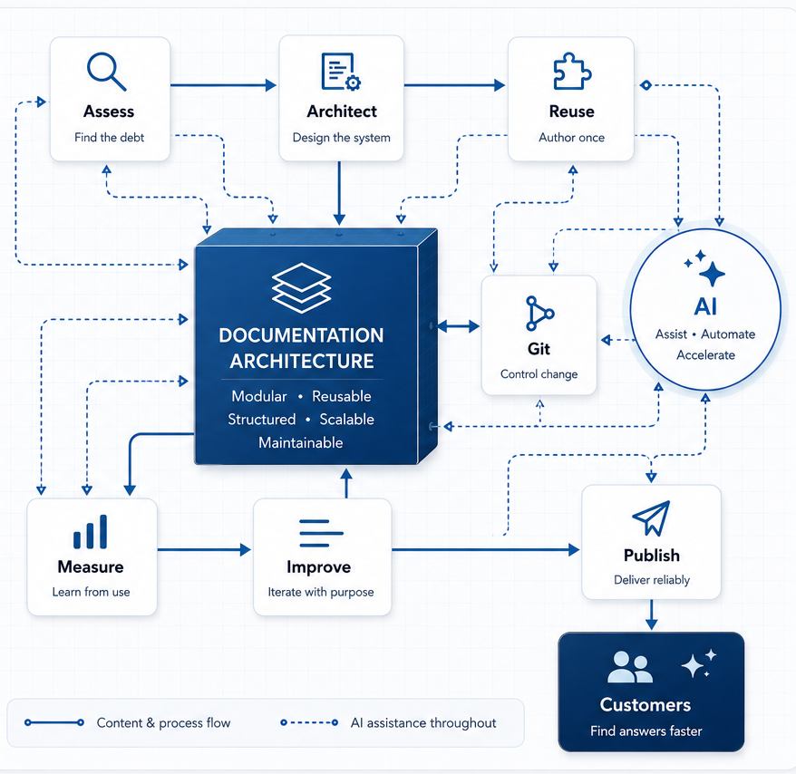

Reduce documentation debt
Find the structural problems behind outdated, duplicated, incomplete, or hard-to-maintain content.
Helping software teams modernize documentation through scalable content architecture, practical AI workflows, and documentation operations.

The outcome
Find the structural problems behind outdated, duplicated, incomplete, or hard-to-maintain content.
Create content systems that support multiple products, outputs, audiences, and release cycles.
Connect documentation with Git, Azure DevOps, publishing tools, analytics, and practical AI assistance.
Selected work
Modernization is rarely a single tool change. It is the work of untangling people, process, content, architecture, and delivery without bringing the whole machine to a halt.
Trintech
Redesigned planning and production workflows so one writer could continue supporting six enterprise products.
Read the case studyNextAxiom
Rebuilt an aging Help system around reusable, context-sensitive content and Git-based maintenance.
Read the case studyEquinix
Built repository, publishing, localization, and delivery infrastructure for roughly 20 products and 15 writers.
Read the case studyDocumentation Health Check
A focused assessment can reveal the hidden maintenance costs inside information architecture, content reuse, publishing, search, ownership, release workflows, and analytics.
See what the assessment coversHow I think
Documentation debt
Why stale documentation often points to deeper failures in ownership, architecture, and release process.
Read the note →Content reuse
A practical way to think about reusable content without creating a maze only the original architect understands.
Read the note →AI workflows
How AI can accelerate research and first drafts while keeping accuracy and ownership firmly human.
Read the note →About
My career has gradually moved from creating individual documents to improving the systems behind them. I have modernized legacy Help environments, designed reusable content architecture, administered Git repositories, managed publishing and localization operations, customized responsive HTML5 systems, and introduced AI-assisted documentation workflows.
I am most energized by difficult documentation environments: too many projects, too much duplication, unclear ownership, brittle publishing, incomplete product coverage, or a team being asked to do more with less.
Start a conversation
I work remotely with software teams that need documentation modernization, MadCap Flare expertise, scalable operations, or a clearer path through accumulated documentation debt.